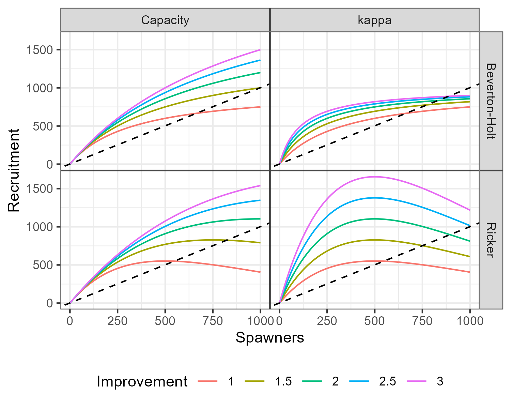

salmonMSE utilizes an age-structured model. The population is tracked
by age and year but various dynamics correspond to the salmon life
stages as described below.
Definitions
Definition of variable names and the corresponding slots in
either the input (SOM) or output (SMSE) objects in salmonMSE.
#> Warning in scan(file = file, what = what, sep = sep, quote = quote, dec = dec,
#> : EOF within quoted string
|
Natural origin spawners |
Natural production |
SMSE |
NOS |
|
Hatchery origin spawners |
Hatchery |
SMSE |
HOS |
|
Effective number of HOS, spawning output discounted by
|
Hatchery |
SMSE |
HOSeff |
|
Fry production by natural origin spawners, assumed to
be equal to egg production |
Natural production |
SMSE |
Fry_NOS |
|
Fry production by hatchery origin spawners, assumed to
be equal to egg production |
Hatchery |
SMSE |
Fry_HOS |
|
Smolt production by natural origin spawners,
density-dependent |
Natural production |
SMSE |
Smolt_NOS |
|
Smolt production by hatchery origin spawners,
density-dependent |
Hatchery |
SMSE |
Smolt_HOS |
|
Carrying capacity of smolts (Beverton-Holt
stock-recruit parameter) |
Natural production + Habitat |
SOM |
capacity_smolt |
|
Spawning output that maximizes smolt production (Ricker
stock-recruit parameter) |
Natural production + Habitat |
SOM |
Smax |
|
Maximum recruitment production rate (stock-recruit
parameter), units of recruit per spawner |
Natural production + Habitat |
SOM |
kappa |
|
Unfished egg production rate, units of egg per
smolt |
Natural production |
SOM |
phi |
|
Maturity at age, i.e., recruitment rate |
Natural production |
SOM |
p_mature |
|
Pre-terminal fishery harvest rate |
Harvest |
SOM |
u_preterminal |
|
Terminal fishery harvest rate |
Harvest |
SOM |
u_terminal |
|
Mark rate of hatchery fish |
Harvest |
SOM |
m |
|
Mortality from catch and release (proportion) |
Harvest |
SOM |
release_mort |
|
Relative vulnerability by age to the fishery |
Harvest |
SOM |
vulPT, vulT |
|
Fecundity of spawners (eggs per female) |
Natural production |
SOM |
fec |
|
Fecundity of broodtake (eggs per female) |
Natural production |
SOM |
fec_brood |
|
Proportion of female spawners in broodtake and
spawners |
Natural production + Hatchery |
SOM |
p_female |
|
Smolt-to-adult recruit survival |
Natural production + Hatchery |
- |
- |
|
Instantaneous natural mortality of juvenile,
corresponding to either the freshwater or marine environment by age
class”,Natural production + Hatchhery,SOM,Mjuv_NOS |
Mjuv_HOS |
|
|
s_,Survival of escapement to spawning grounds and hatchery,Natural
production,SOM,s_enroute ,Natural origin broodtake,Hatchery,SMSE,NOB
,Hatchery origin broodtake,Hatchery,SMSE,HOB s_,Survival of hatchery
eggs to yearling life stage,Hatchery,SOM,s_egg_smolt s_,Survival of
hatchery eggs to subyearling life stage,Hatchery,SOM,s_egg_subyearling
p_,Proportion of hatchery releases as yearling
(vs. subyearling),Hatchery,Internal state variable,- s_,Survival of
adult broodtake in hatchery,Hatchery,SOM,s_prespawn n_,Target number of
hatchery releases as yearlings,Hatchery,SOM,n_yearling n_,Target number
of hatchery releases as subyearlings,Hatchery,SOM,n_subyearling
p_,Proportion of the total broodtake of natural origin (vs. hatchery
origin),Hatchery,Internal state variable,- p_,Proportion of the total
broodtake of hatchery origin (vs. natural origin),Hatchery,Internal
state variable,- p^,Maximum proportion of the natural origin
broodtake from the escapement |i.e. |NOB/NOS ratio,Hatchery,SOM,pmax_NOB
,Natural origin return,Natural production,SMSE,Return_NOS ,Hachery
origin return,Hatchery,SMSE,Return_HOS p^,Proportion of hatchery origin
escapement to hatchery | |$ available for
broodtake,Hatchery,SOM,phatchery p^,Proportion of hatchery origin
escapement removed from spawning grounds$ |not available for
broodtake,Hatchery,SOM,premove_HOS ,Reduced reproductive success of HOS
(relative to NOS),Hatchery,SOM,gamma {z},Mean phenotypic value of cohort
in natural and hatchery environments,Fitness,Internal state variable and
SOM,zbar_start ,Optimal phenotypic value for natural and hatchery
environments,Fitness,SOM,theta ^2,Variance of phenotypic traits in
population,Fitness,SOM,fitness_variance ,Selection strength: fitness
variance relative to phenotypic variance,Fitness,SOM,selection_strength
h^2,Heritability of phenotypic traits,Fitness,SOM,heritability
{W},Population fitness in the natural and hatchery
environments,Fitness,SMSE,fitness i,Relative fitness loss at the
i-th life stage (egg |fry |smolt),Fitness,SOM,rel_loss ,Proportionate
natural influence,Fitness,SMSE,PNI m,Mark rate of hatchery fish (affects
fishery retention of hatchery fish relative to natural
fish),Harvest,SOM,m p,Proportion of natural origin spawners
(vs. effective HOS),Population dynamics,Internal state variable,-
p_,Proportion of effective hatchery origin spawners (vs. NOS),Population
dynamics,SMSE,NOS |HOS_effective p_,Proportion of hatchery origin
spawners (vs. NOS),Population dynamics,SMSE,NOS | |$ HOS $ | | | | |
Natural production
First, we consider natural production in the absence of fitness
effects from the hatchery improvement.
Egg production
From the spawners (NOS and HOS) of age
in year
,
the corresponding egg production of the subsequent generation is
calculated as:
where
and the superscript denotes the parentage of the progeny.
Fry
Fry production is assumed to be equal to egg production, i.e.,
and
.
Smolts
Survival to the smolt stage is density-dependent. With the
Beverton-Holt stock-recruit relationship, the age-1 smolt production
is
where
,
,
the unfished egg per smolt
,
with
as the maturity at age.
The density-independent component of the survival equation is
controlled by
and the density-dependent component of survival is controlled by
and scaled by the total number of fry, as well as subyearling hatchery
releases (see Hatchery section), in
the system.
If there is knife-edge maturity, i.e., all fish mature at the same
age, then the equation simplifies to
,
with
as the marine survival (between 0-1).
With the Ricker stock-recruit relationship, smolt production is
where
and
.
Habitat improvement
Habitat improvement can improve either the productivity parameter,
capacity parameter, or both.
Base terms
and
are used in the historical period of the model, e.g., conditioning from
data. In the projection, the stock recruit parameters
and
are updated with the improvement parameters,
or
,
as specified in the operating model.
The corresponding parameters in the projection is:

Comparison of the change in two density-dependent stock-recruit
functions if the improvement parameter is applied to either the
compensation ratio (kappa) or capacity parameter. The base value of
kappa is 3, Beverton-Holt capacity is 1000, and Ricker Smax is 500. The
dotted line is the one-to-one unfished replacement line (corresponding
to
).
Hatchery production
Hatchery production is controlled by several sets of variables
specified by the analyst.
The first consideration is to specify the target number of annual
releases of sub-yearlings
and yearlings
.
Going backwards, the corresponding number of eggs needed to reach the
target number depends on the egg survival to those life stages. Finally,
the corresponding number of broodtake is dependent on the brood
fecundity and hatchery survival of broodtake.
Additional considerations are the composition (natural vs. hatchery
origin) of the broodtake. To minimize genetic drift of the population
due to hatchery production, it is desirable to maintain a high
proportion of natural origin broodtake. This is controlled by
,
the desired proportion of natural broodtake relative to all broodtake,
but can be exceeded if there is insufficient escapement of natural
origin fish.
Second, it is also desirable to maintain high spawning of natural
origin fish. This is controlled by
,
the maximum allowable proportion of the natural origin escapement to be
used as broodtake. This value is never exceeded.
The following equations then generate the annual broodtake and
hatchery production from the state variables given these
constraints.
Broodtake
The annual target egg production for the hatchery is calculated from
the target releases as
where
is the corresponding survival term from the egg life stage.
From the escapement in year
,
some proportion
is used as broodtake:
The proportion of the available hatchery fish for broodtake is
controlled by
,
which can include fish swimming back to the hatchery or removed from
spawning grounds.
The realized hatchery egg production is
where egg production is subject to a survival term
for the broodtake.
The proportion
is solved annually to satisfy the following conditions:
The target ratio
ensures that there is a sufficiently high proportion of natural origin
fish in the broodtake. The maximum removal rate of natural origin fish
ensures that there is high abundance of natural origin spawners.
The total egg production in a given year can fail to reach the target
if there is insufficient natural origin escapement. In this case, the
NOB take is set to the maximum removal rate
(),
and the remaining deficit in egg production is met using HOB.
Smolt releases
After the total hatchery egg production is calculated, the production
of yearlings and subyearlings is calculated to ensure the annual ratio
is equal to the target ratio. To do so, the parameter
is solved subject to the following conditions:
From the total broodtake, the smolt releases is calculated as
or
Subyearlings are subject to density-dependent survival in competition
with natural production of fry.
Pre-terminal fishery
Let
be the juvenile abundance in the population and
and
.
The superscript for the smolt variable corresponds to the parentage
while the superscript for
denotes the origin of the current cohort.
Harvest
in the pre-terminal
()
fishery, assuming no mark-selective fishing, is modeled as a seasonal
process. The kept catch
is
The instantaneous fishing mortality is solved to meet the following
condition
Recruitment and maturity
The recruitment is calculated from the survival of juvenile fish
after pre-terminal harvest and maturation:
The juvenile abundance in the following year consists of fish that
did not mature and subsequently survived natural mortality
:
Natural mortality is specified by age class. Accordingly, this
mortality corresponds to either the freshwater or marine survival
depending on age class.
Terminal fishery
Assuming no mark-selective fishing, the retained catch of the
terminal
()
fishery is calculated from the harvest rate similarly as with the
pre-terminal fishery:
subject to
Escapement and spawners
The escapement consists of the survivors of the terminal fishery:
The abundance of natural origin spawners consists of the escapement
that survive migration to the spawning ground
()
and are not removed for brood:
The hatchery origin spawners is the escapement that survive
migration, do not return to the hatchery (either by swim-in facilities
or direct removal through proportion
),
and are not removed from the spawning round (through proportion
,
these animals are not available for brood).
Fitness effects on survival
Reproductive success of first generation hatchery fish has been
observed to be lower than their natural counterparts, and is accounted
for in the
parameter (see review in Withler
et al. 2018).
Through genetic and epigenetic factors, survival of hatchery
juveniles in the hatchery environment selects for fish with a phenotype
best adapted for that environment, and likewise for juveniles spawned in
the natural environment. Since these traits are heritable, the fitness
of the natural population can shift away from the optimum for the
natural environment towards that of the hatchery environment on an
evolutionary time scale, i.e., over a number of generations, when
hatchery fish are allowed to spawn.
As described in Ford 2002
and derived in Lande
1976, the fitness loss function
for an individual with phenotypic trait value
in a given environment is
where
is the optimum for that environment and
is the fitness variance.
If the phenotypic trait value
in the population is a random normal variable with mean
and variance
,
then the mean fitness of the population in generation
is
,
where
is the Gaussian probability density function. The solution is
proportional to
The mean phenotype
is calculated iteratively, where the change
from generation
to
is
where
is the heritability of
and
is the trait value after applying the fitness function, defined as:
Let
be a function that returns the mean trait value after selection in an
environment with optimum value
.
With a hatchery program, the mean trait value of the progeny in the
natural environment is a weighted average of the mean trait value in
natural and hatchery origin spawners, with selection in the natural
environment, i.e., with optimum trait value
:
where
.
Similarly, the mean trait value in the hatchery environment
is a weighted average of the mean trait value of the natural and
hatchery broodtake, with selection in the hatchery environment, i.e.,
with optimum trait value
:
where
.
The fitness variance
and phenotype variance
are assumed constant between the two environments. The fitness variance
is parameterized relative to the variance of the phenotype, i.e.,
where
is the “selection strength”.
The mean fitness of generation
in the natural environment is then:
Mixed brood-year return
If a mixed-brood year return in year
across several ages
produces the smolt cohort in year
,
then the mean trait value in the progeny is calculated from a weighted
average by brood year and age class fecundity:
where
Effective proportions, i.e., weighting by age-class fecundity,
accounts for older age classes that are more fecund and more likely to
contribute to the production of next cohort.
Fitness loss
Fitness can reduce survival in the egg, fry, and immature life
stages:
with
is the proportion of the fitness loss apportioned among the three life
stages,
,
and density-dependent parameters
,
.
In the marine environment, age-specific natural survival is reduced
proportional to the fitness loss term and modeled as a cohort
effect.
With the Ricker density-dependent survival,
with
.
PNI
PNI (proportionate natural influence) is an approximation of the rate
of gene flow from the hatchery to the natural environment, calculated
for the progeny in year
from the parental composition of year
:
Generally, a combination of minimizing hatchery releases, increasing
natural broodtake, and reducing the number hatchery origin spawners
maintains high PNI, i.e., low rate of gene flow from the hatchery to
natural environment.
Wild salmon
With single brood-year returns, the proportion of wild salmon,
natural origin spawners whose parents were also natural spawners, can be
calculated as
where
.
The first term is the proportion of natural spawners in the current
generation
.
The ratio comprising the second term discounts the proportion of the
current generation to include natural spawners whose parents were both
natural spawners. Assuming non-assortative mating, the three terms in
the denominator gives the composition of generation
whose parents who are both natural origin, mixed origin (one parent in
natural origin and the other is hatchery origin), and both hatchery
origin.
To generalize for mixed-brood year return, we calculate the
probability weighted across brood-years and age class fecundity:
where
The probability of finding a wild salmon in year
is the sum of probabilities of finding a wild salmon over all ages. For
each age
,
the first ratio is the probability of finding a natural spawner in year
.
The second ratio is the probability of mating success from two parental
natural spawners in year
using a Punnett square, assuming non-assortative mating across age and
origin. The summation across dummy age variable
calculates the total proportion of spawners in a given year.
Effective proportions, i.e., weighting by age-class fecundity, in the
parental composition accounts for older age classes that are more fecund
and more likely to contribute to the production of offspring.
Mark-selective fishing
If the mark rate
of hatchery fish is greater than zero, then mark-selective fishing is
implemented for both the pre-terminal and terminal fisheries. The mark
rate is a proxy for retention and the harvest rate
corresponds to the ratio of the kept catch and abundance. The
exploitation rate
is calculated from kept catch and dead releases. Exploitation rates
differ between hatchery and natural origin fish because there is no
retention of the latter.
Let the instantaneous fishing mortality for kept catch and released
catch be
where
is the proportion of released fish that die.
is an index of fishing effort, also referred to as the encounter rate by
the fishery, that links together
and
.
Intuitively, fishing effort can increase in a mark-selective fishery
compared to a non-selective fishery. For example, if the mark rate is 20
percent, then the fishing effort could be 500 percent higher than in a
non-selective fishery in order to attain the kept quota or bag limit.
Additional catch and release mortality then occurs for un-marked fish,
according to
.
In the pre-terminal
()
fishery,
is solved to satisfy the following equation for hatchery fish:
where the kept catch
is
.
The exploitation rate for natural origin fish is calculated from dead
discards. The exploitation rate for hatchery origin fish is calculated
from kept catch and dead discards:
Similarly, in the terminal fishery, the fishing effort satisfies the
equation
with the corresponding exploitation rates: